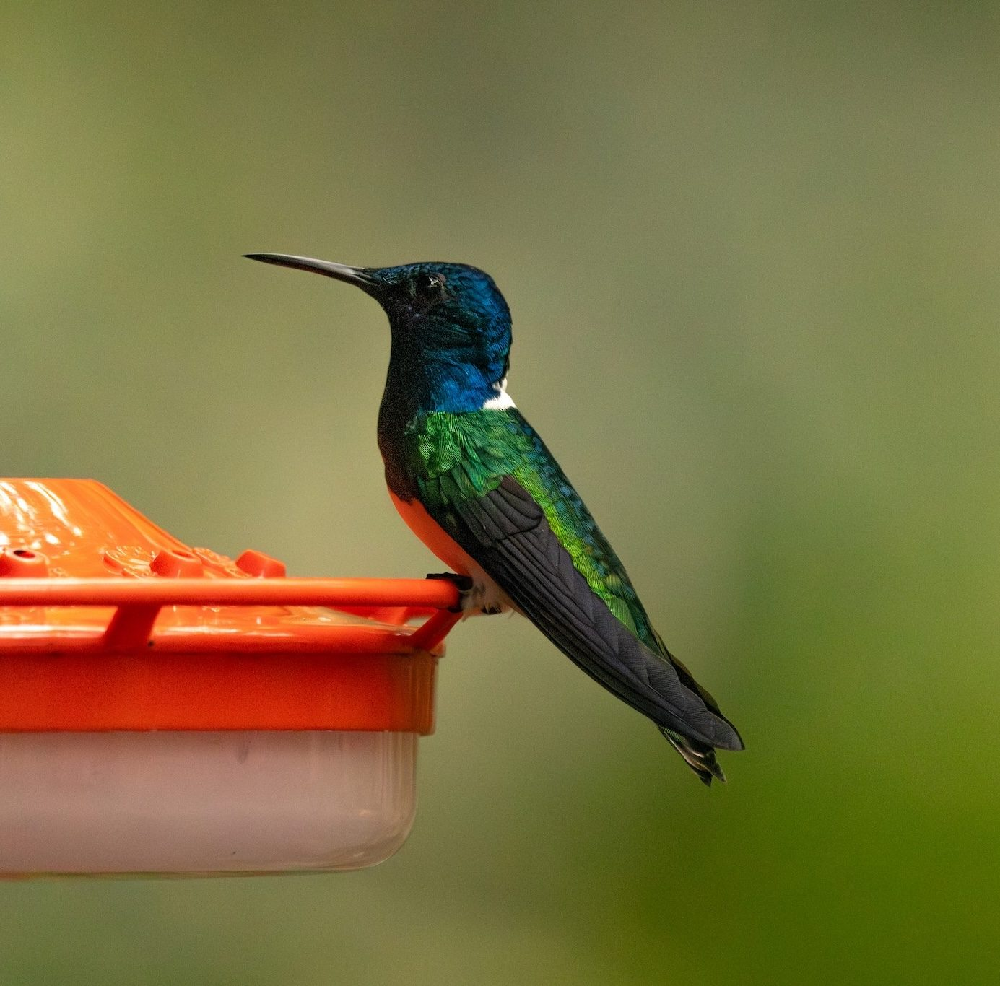

White-necked Jacobin
Florisuga mellivora (Linnaeus, 1758)
Spanish: Colibrí Capucha Azul
The White-necked Jacobin (Florisuga mellivora) is a hummingbird in the subfamily Florisuginae (topazes). It weighs about 7.4 g and its bill is 23.6 mm long. It lives in 17 countries, including Colombia, Costa Rica, Ecuador, Panama and Belize. Its IUCN Red List status is Least concern, with a decreasing population.
See it in the explorer eBird page ↗
At a glance
- Weight
- 7.4 g, about 7 paperclips
- Bill
- 23.6 mm
- Lives in
- Forest
- Moves
- Stays put all year
- Red List status
- Least concern, decreasing
Its place in the family
- Family Trochilidae hummingbirds
- Subfamily Florisuginae topazes
- Genus Florisuga jacobins
Where it lives · 19 countries
- Colombia
- Costa Rica
- Ecuador
- Panama
- Belize
- Trinidad and Tobago
- Peru
- Brazil
- Honduras
- Venezuela
- Guatemala
- Mexico
- Guyana
- Suriname
- French Guiana
- Nicaragua
- Bolivia
- Argentina rare visitor
- El Salvador rare visitor
Others in the genus Florisuga
- Black Jacobin Florisuga fusca
Sources
Names: eBird/Clements Checklist (Cornell Lab of Ornithology). Groups: Dickinson & Remsen (2013) and McGuire et al. (2014). Weight, bill, habitat and movement: AVONET (Tobias et al. 2022, CC BY 4.0). Countries: BirdLife International DataZone, checked against eBird records via GBIF. Red List status and trend: BirdLife International, the IUCN Red List authority for birds.